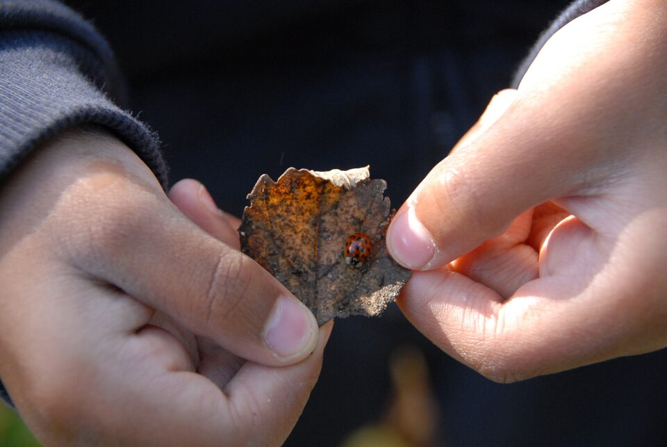

Keep Kew Riverside Primary School open.
Richmond Council is consulting on a proposal to close the school from 1 September 2027. No final decision has been made.
The official response deadline is 16 October 2026. Letters, ideas and videos shared here do not replace a council response.
We moved here for this school. Read our family’s story →

Photograph from the school website.
Start where you are
Find what you need.
Shortcuts to pages and answers on this website.
Before you respond.
Three essentials, with more in the FAQ.
Full proposal, dates & who decidesHas closure already been decided?
No. The council is consulting on a proposal. Its timetable plans for a committee to decide in November 2026 whether to move to formal consultation. It plans a final decision in April 2027. Closure on 1 September 2027 would depend on approval.
What can we do together now?
Help build the strongest case for keeping Kew Riverside Primary School open: read the evidence, share what the school means to your family, check the current Parent action plan and explain which questions still need answers. Use what you learn in your own consultation response by 16 October 2026.
The parent action plan → · Practical questions about school places
Is the £400,000 deficit an annual loss?
The council’s FAQ forecasts a £212,417 annual gap in 2026/27 and £19,268 remaining reserve at March 2027. The £457,702 projected deficit by 2028/29 builds up over time; it is not an annual loss or a closure saving. The received final budget summary supports those indicative figures; its assumptions, ledger and current monitoring are still needed.
Preparing your response? Download the checklist (PDF) · Browse the source library · See the unanswered questions.